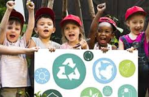
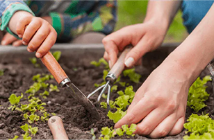
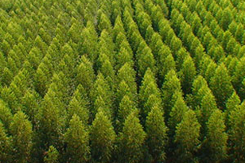

Plantio de mudas
Cada muda plantada ajuda a restaurar o meio ambiente.
Ser voluntário na Verde Ação é plantar esperança e colher transformação. Juntos, cuidamos do planeta e inspiramos mudanças reais!
Cada muda plantada ajuda a restaurar o meio ambiente.

Promove oficinas e rodas de conversa.

Ajude a manter áreas preservadas.

Identifique áreas que precisam de mapeamento.
Faça parte de ações que transformam o mundo. Com pequenas atitudes, você pode gerar grandes impactos na natureza e na comunidade.